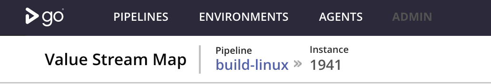

9f6909e - Renames pipeline 'Label' to 'Instance' as part of an ongoing UX refresh. (#3944) (#3949)
Pipeline instances have an explict link to VSM across the application for better discoverablity. Moreover, the term pipeline Label has been changed to Instance as part of an ongoing UX refresh.
Page headers refreshed across application

Other Improvements
eb7305e - Improves classloading and resource management. (#3792)
Prevents file-descriptor and classloader leaks by ensuring that:
Classloaders for agent-launcher and agent are closed properly
Temporary jar files that are extracted are removed after closing the
classloaders
File watcher from log4j is replaced with a custom implementation
Support for phusion based docker server and agent images have been removed this release. We provide support for the docker images for GoCD agents across the following operating systems - Alpine 3.5, CentOS 6 & 7 , Debian 7 & 8, Ubuntu 12.04, 14.04 & 16.04
Deprecations
As of release 17.9, version 2 of the plugin info API is deprecated. This version of the API will be removed in 17.12.0 release (scheduled to be released in November 2017). Version 3 of the API is available, and users are encouraged to use it.
As of release 17.5, authentication plugin endpoints have been deprecated. Support for these plugins will be removed in 18.1 (scheduled to be released in January 2018). Plugin developers are encouraged to migrate their plugins to use the Authorization Plugins that were introduced. The following plugins are affected by this deprecation:
8571bc1 - Removes garage controller and associated services. (#3923)
Note
With release 17.5.0 support for in-built password file and LDAP/AD authentication had been deprecated. In this release support for this has been removed in favour of the bundled LDAP and Password File plugins respectively.